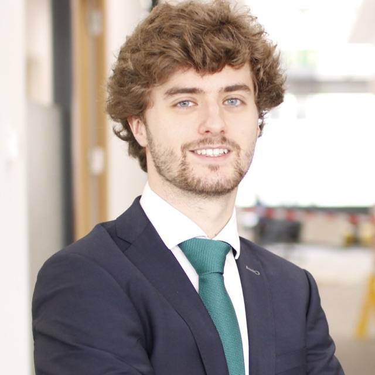

About me

I build AI systems that have to work on Monday morning. Right now that means an agentic recruitment platform for the Abu Dhabi Government, where I'm a Senior Forward Deployed Engineer at the Department of Government Enablement.
Before this I spent three years at BCG X as a forward deployed AI engineer, a year at CERN, and a year at HPE. I've written a lot of Python and a lot of React, and I've shipped RAG systems and agents into other people's Azure tenants often enough to have opinions about it.
I studied in Oviedo, Madrid and Italy, and I've worked out of Madrid, Geneva and now Abu Dhabi. Spanish is my first language, my English is fluent, and my Italian gets me through a dinner.
Things I do
At DGE I lead the engineering of an agentic recruitment platform that serves more than 50 Abu Dhabi Government entities and around 10,000 HR users. It's part of the AED 13 billion AI-native government strategy that DGE is driving. The workflows we build source, screen and match candidates with AI agents, with the goal of cutting time-to-hire from about 45 days to around 20.
I spend my days somewhere between the code and the government stakeholders who own the hiring process, scoping what they need and turning it into things that run in production. That is exactly where I like to be.
Stack: Python · FastAPI · LangGraph · OpenAI · Azure · React · Redis
Things I did
From October 2025 to July 2026 I worked freelance from Madrid, building conversational AI for customer-support teams: ticket classification, drafted responses, and the RAG pipelines behind them, from ingestion and chunking to embedding and retrieval. On one of those engagements about 40% of incoming tickets ended up auto-classified, which meant a lot less manual sorting for the humans.
Stack: Python · FastAPI · React + TypeScript · Redis · Azure · AWS · GCP · LangGraph · OpenAI
From November 2022 to October 2025 I was a Forward Deployed AI Engineer at BCG X in Madrid. I led the development of ACA, a GenAI platform that more than 2,000 BCG partners use to find cost-saving opportunities with AI agents. I built a RAG system for a German insurer on Azure OpenAI, for document Q&A and summarisation, deployed inside the client's own Azure environment. I improved a retention model for a major health insurer, and I was the frontend lead on DEEP.AI, an AI solution for a telecom client running on GCP. It was consulting, so the client, the industry and the stack changed every few months. I liked that.
Stack: Python · FastAPI · Next.js · React · Redis · Azure · AWS · GCP · Java Spring · Angular
From October 2021 to October 2022 I was a Software Engineer at CERN in Geneva, in the HSE department. I built the Remus Application Editor, a tool for creating interactive maps with drag-and-drop widgets, in React and Spring Boot on top of an Oracle database. Working at CERN remains a highlight.
Stack: React · Java Spring Boot · Oracle
From June 2020 to August 2021 I was a Software Engineer in HPE's R&D Orchestration team in Madrid, where I built a web app to visualise and filter more than 400 virtual machines and automated JSON generation from Ansible inventories with Python.
Stack: Angular · TypeScript · FastAPI · Node.js · MySQL
Academically, I hold an MSc in Data Engineering from MBIT School in Madrid (2024 to 2025, sponsored by BCG), an MSc in Computer Engineering from Carlos III University of Madrid (2020 to 2022), and a BSc in Computer Engineering from the University of Oviedo (2015 to 2020), including an exchange year in Italy.
Elsewhere
- GitHubgithub.com/nachomndzb
- Email
nachomndzb@gmail.com